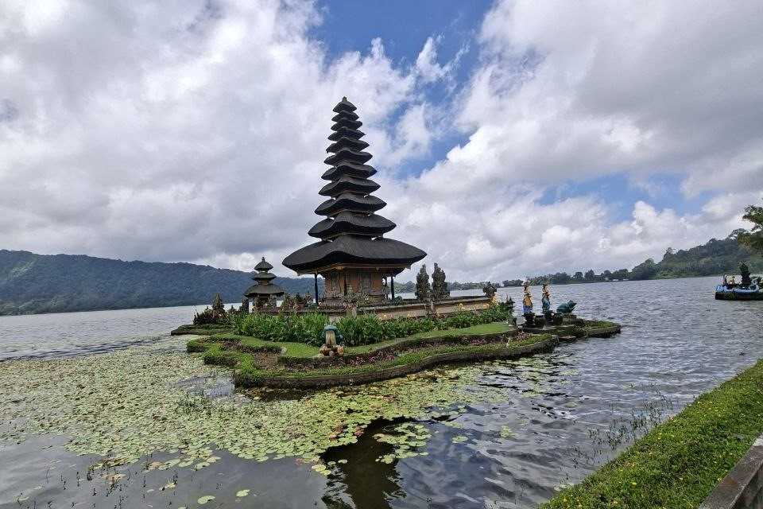

Candi Ulun Danu Beratan, yang terletak di kawasan Bedugul, Kabupaten Tabanan, Bali, merupakan salah satu destinasi wisata paling ikonik di pulau ini. Candi ini berdiri megah di tepi Danau Beratan dan sering tampak seperti mengapung di atas air, menciptakan pemandangan yang sangat indah dan menenangkan. Dalam kegiatan Kuliah Kerja Lapangan (KKL), kunjungan ke Candi Ulun Danu memberikan wawasan tentang budaya, keagamaan, serta pengelolaan pariwisata berbasis alam di Bali.
Selama kunjungan ke Candi Ulun Danu Beratan, peserta KKL dapat menikmati berbagai aktivitas menarik, seperti:
• Mengunjungi area candi dan belajar tentang sejarah serta makna religiusnya.
• Menikmati pemandangan Danau Beratan dengan udara sejuk pegunungan.
• Berfoto di spot ikonik dengan latar candi yang tampak mengapung di danau.
• Menikmati kuliner lokal atau membeli suvenir di area sekitar Candi Kuning.
Candi Ulun Danu Beratan memiliki keunggulan yang menjadikannya salah satu tujuan wisata utama di Bali:
Keindahan Alam: Berada di tepi danau dengan panorama pegunungan yang menyejukkan.
Nilai Budaya Tinggi: Candi ini menjadi simbol keharmonisan antara manusia dan alam dalam ajaran Hindu Bali.
Fasilitas Lengkap: Tersedia area parkir, taman, toilet umum, restoran, dan pusat oleh-oleh.
Nilai Edukatif: Memberikan wawasan tentang warisan budaya dan pengelolaan destinasi wisata berkelanjutan.